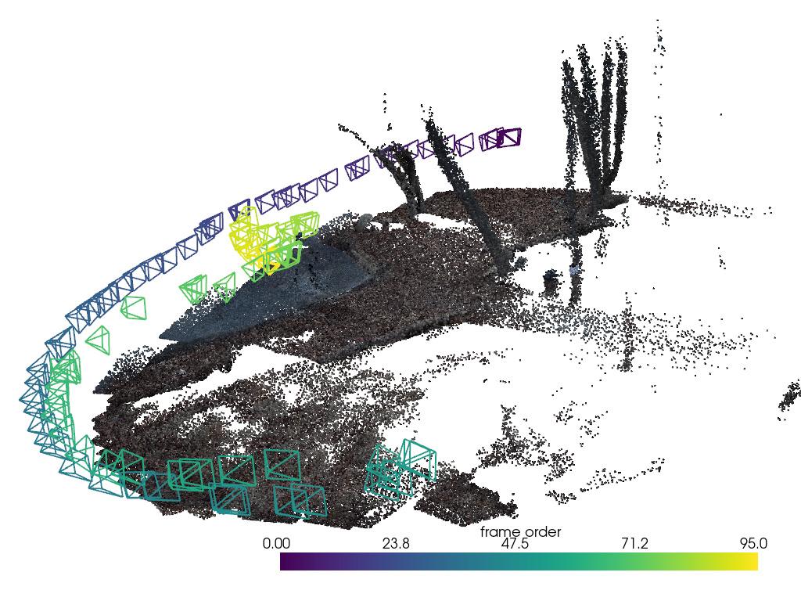
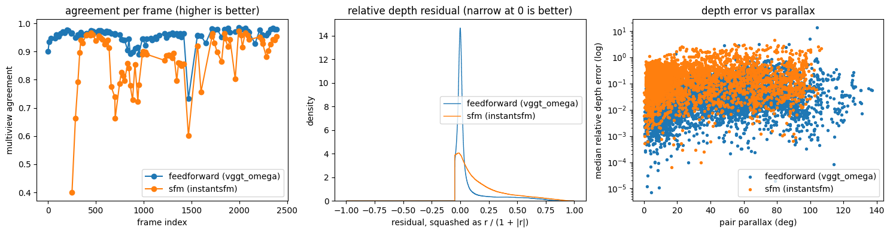

Reconstruction#
Reconstruction is the main stage of the pointcloud module. It processes the keyframes selected from preproc, creating a camera per frame, and uses a specified method to create a pointcloud.
This tutorial illustrates how to reconstruct the tutorial scene from (1) a feedforward model (VGGT Omega) and (2) a Structure-from-Motion (SfM) model. Reconstructions are then validated by testing the viewpoint agreement of the derived camera poses.
[1]:
import contextlib
import io
import json
import matplotlib.pyplot as plt
import numpy as np
import pandas as pd
import pycolmap
from collab_splats.geometry.metrics import compute_reconstruction_quality
from collab_splats.pointcloud.sfm import InstantSfMCreator
from collab_splats.pointcloud.utils import clean_pointcloud
from collab_splats.utils.visualization import (
camera_view,
pointcloud_to_polydata,
visualize_splat,
)
%run ../tutorial.py
scene = tutorial_scene("preproc", "pointcloud", "reconstruction_quality_report")
1. Feedforward reconstruction#
A feedforward model (here VGGT-Omega) predicts a depth map and a camera for every keyframe in one network pass. The pipeline already ran it for this scene, so the page loads the result. Each camera has two sets of intrinsics: one for the full-size frame and one for the smaller grid the model’s depth lives on.
[2]:
result = scene.result
print(f"{len(result.points):,} points, {len(result.image_paths)} cameras")
500,000 points, 96 cameras
The point cloud seen from the side, thinned for display. Cameras are colored by time:
[3]:
# Thin the cloud for display
display_cloud = clean_pointcloud(result, remove_outliers=False, max_points=200_000)
cloud = pointcloud_to_polydata(display_cloud.points, RGB=display_cloud.colors)
# Frustum size from the scene size; feedforward units are arbitrary
lo, hi = np.percentile(display_cloud.points, [5, 95], axis=0)
size = np.linalg.norm(hi - lo)
plotter = visualize_splat(
cloud,
display_cloud.extrinsics,
camera_kwargs={"scale": 0.005 * size, "n_poses": 1, "line_width": 2},
viz_kwargs=camera_view(display_cloud.extrinsics, display_cloud.points),
)
plotter.show()

The cameras should trace the walked path from dark (start) to yellow (end), and the points should form clear surfaces in front of them.
2. Structure from motion#
Structure from motion (InstantSfM) matches features between frames and solves all cameras together. Its point cloud is sparse, so the creator adds a depth map per frame from Video-Depth-Anything, scaled to fit the SfM points. The result has the same form as the feedforward one. SfM drops frames it cannot match, so it needs more overlap between keyframes.
[4]:
sfm_dir = work_dir("reconstruction")
sfm = InstantSfMCreator(random_seed=0)
# Hide InstantSfM and COLMAP progress output
pycolmap.logging.minloglevel = 2
with contextlib.redirect_stdout(io.StringIO()), contextlib.redirect_stderr(io.StringIO()):
sfm_result = sfm.create_pointcloud(scene.images_dir, sfm_dir)
# How many frames SfM placed, and the scale that fit each depth map to the SfM points
scales = np.asarray(sfm.attrs["depth_scales"])
print(f"{sfm.attrs['registered_frames']} of {sfm.attrs['total_frames']} frames registered")
print(f"depth scale: median {np.median(scales):.2f}, range {scales.min():.2f}-{scales.max():.2f}")
77 of 96 frames registered
depth scale: median 5.02, range 4.30-6.77
The depth scale should be about the same for every frame. A wide range means the depth model and SfM disagree about the scene’s shape, not just its size.
3. Judging a reconstruction#
Given that no ground truth exists, we evaluate the quality of the reconstruction as multi-view agreement. We project each frame’s depth into the other frames –> two views that see the same surface should align in depth.
The reconstruction_quality_report stage measures:
multiview agreement: share of a frame’s pixels whose depth another view confirms within 5%. 1 means every pixel is confirmed.
relative depth residual: (depth seen by view B − depth predicted from view A) / depth. 0 means the views agree; 0.1 means 10% off.
parallax: angle between two views of the same point. Small parallax pins depth poorly.
The five frames with the lowest agreement:
[5]:
report = json.loads(scene.outputs["reconstruction_quality_report"].read_text())
ff_frames = pd.DataFrame(report["frames"])
columns = ["frame_idx", "multiview_agreement", "median_abs_rel_depth_error"]
display(ff_frames.sort_values("multiview_agreement")[columns].head(5).round(3))
| frame_idx | multiview_agreement | median_abs_rel_depth_error | |
|---|---|---|---|
| 65 | 1468 | 0.732 | 0.033 |
| 44 | 949 | 0.889 | 0.030 |
| 40 | 859 | 0.892 | 0.024 |
| 41 | 884 | 0.898 | 0.023 |
| 0 | 0 | 0.901 | 0.022 |
The same measurements for the SfM result, computed directly from its arrays:
[6]:
sfm_names = [path.name for path in sfm_result.image_paths]
sfm_tables = compute_reconstruction_quality(
sfm_result.depth,
sfm_result.model_intrinsics,
sfm_result.intrinsics,
sfm_result.extrinsics,
sfm_result.original_coords,
sfm_names,
sfm_result.confidence,
None,
)
Both routes side by side:
[7]:
routes = {"feedforward (vggt_omega)": report, "sfm (instantsfm)": sfm_tables}
fig, axes = plt.subplots(1, 3, figsize=(15, 4))
for label, tables in routes.items():
frames_df = pd.DataFrame(tables["frames"])
pairs_df = pd.DataFrame(tables["depth_pairs"])
# Agreement per frame, against the source frame index
axes[0].plot(frames_df["frame_idx"], frames_df["multiview_agreement"], "o-", label=label)
# Residual histogram as a density, since the routes see different pixel counts
hist = tables["depth_residual_histogram"]
counts = np.asarray(hist["counts"])
edges = np.asarray(hist["bin_edges"])
axes[1].stairs(counts / counts.sum() / np.diff(edges), edges, label=label)
# Depth error of each frame pair against its parallax
axes[2].scatter(
pairs_df["median_parallax_deg"], pairs_df["median_rel_depth_error"], s=8, label=label
)
axes[0].set(
title="agreement per frame (higher is better)",
xlabel="frame index",
ylabel="multiview agreement",
)
axes[1].set(
title="relative depth residual (narrow at 0 is better)",
xlabel="residual, squashed as r / (1 + |r|)",
ylabel="density",
)
axes[2].set(
title="depth error vs parallax",
xlabel="pair parallax (deg)",
ylabel="median relative depth error (log)",
yscale="log",
)
for ax in axes:
ax.legend()
plt.tight_layout()

How to read it:
Agreement near 1 and a narrow histogram: the views confirm each other.
One frame with low agreement: usually a bad camera pose.
Large error at small parallax is expected; large error at large parallax is a real problem.
In a pipeline run#
The pointcloud stage picks the route; the reconstruction_quality_report stage writes the report next to pointcloud.zarr. SfM is experimental.
pointcloud:
method: feedforward # feedforward | sfm
backend: vggt_omega # vggt_omega | vggtx | mapanything | loger
# sfm: instantsfm | colmap | hloc
instantsfm:
random_seed: 0
reconstruction_quality_report:
min_pair_overlap: 0.0 # 0 keeps every ordered pair